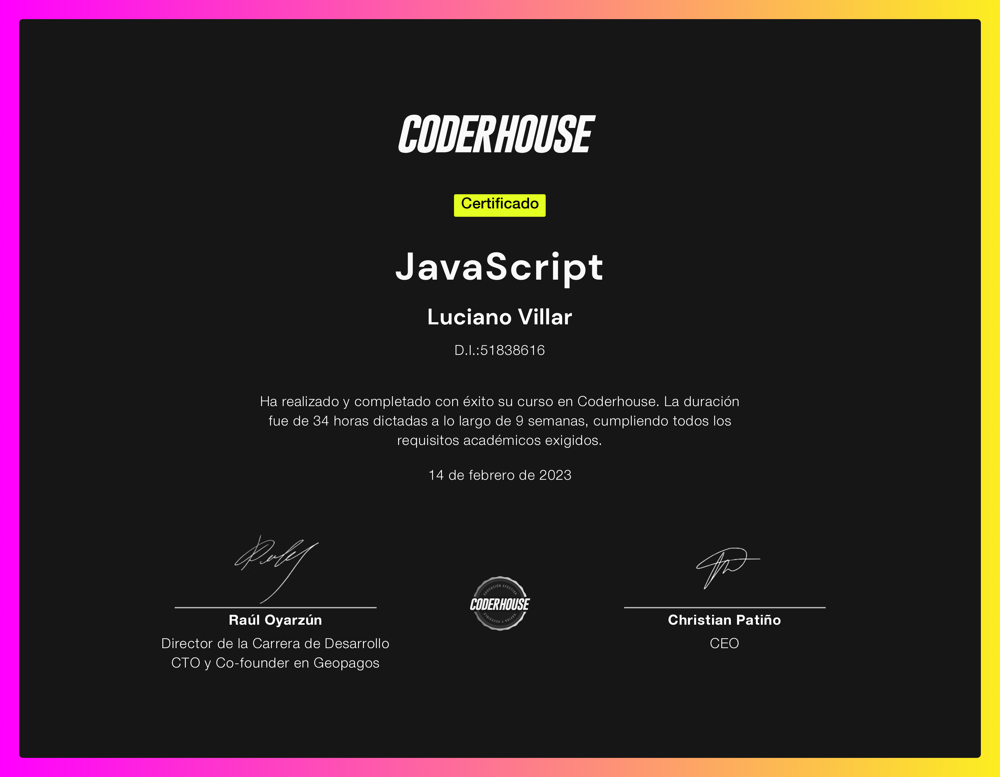
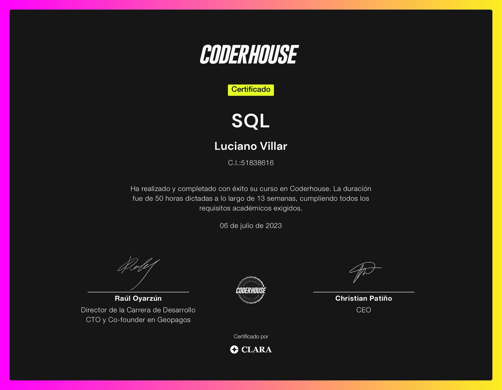

¡Bienvenidos!
Mi nombre es Luciano Villar
Un entusiasta de la tecnología en constante evolución. Aquí comparto mi viaje en el mundo IT, desde aprendizaje hasta proyectos emocionantes. Únete a mí mientras descubro nuevas fronteras digitales.
Full Stack Developer
JavaScript
SQL
Quieres conocerme?
En este rincón especial, te invito a descubrir un poco más sobre la persona detrás de la pantalla.
¿Te preguntas quién está detrás de las palabras y respuestas? Aquí es donde la magia sucede. En "Quién Soy", compartiré contigo mi historia, intereses y algunas curiosidades que tal vez te sorprendan
Ir a quien soyQuieres ver mi curriculum?
En la sección de mi currículum, te invito a dar un paseo por mi viaje profesional y académico.
Aquí es donde las experiencias y los logros se entrelazan para contar la historia de mi desarrollo y crecimiento. Explora los capítulos de mi carrera, desde mis primeros pasos en el ámbito educativo hasta las experiencias laborales que han moldeado mi trayectoria. Descubrirás no solo los roles y responsabilidades que he asumido, sino también las lecciones aprendidas y los hitos que han dejado una huella en mi camino.
Ir a mi curriculumQuieres contratar mis servicios?
En esta sección, te invito a descubrir el abanico de servicios que estoy emocionado de ofrecer.
Desde habilidades especializadas hasta soluciones creativas, aquí encontrarás un resumen de los servicios que hasta el momento puedo poner a tu disposición.
Ir a mis servicios
Quieres contactarme?
En esta sección de contacto, te ofrezco diversas maneras de establecer conexión.
Tu opinión, preguntas o colaboraciones son siempre bienvenidas. ¡Estoy aquí para escucharte y trabajar juntos!
Ir a contacto